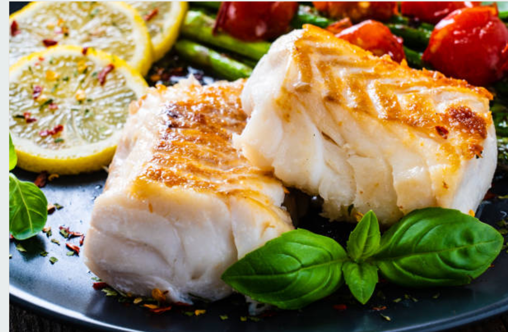
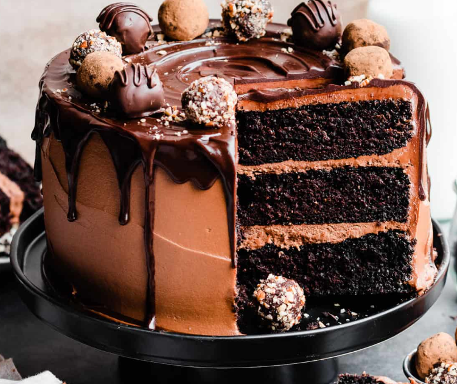

Our Signature Recipes
1. Jollof Rice with Chicken

Ingredients:
- 2 cups of long-grain rice
- 4 fresh tomatoes (blended)
- 2 tablespoons tomato paste
- 1 onion (chopped)
- 2 cups chicken stock
- Spices (salt, thyme, curry, pepper)
- Fried chicken pieces
Preparation:
- Heat oil in a pot and fry onions and tomato paste for 3 minutes.
- Add blended tomatoes and cook until thickened.
- Pour in chicken stock and seasonings; bring to a boil.
- Add rice and cook on low heat until soft.
- Serve with fried chicken and garnish with vegetables.
2. Grilled Fish with Fries

Ingredients:
- 1 whole tilapia or catfish (cleaned)
- 2 tablespoons vegetable oil
- 1 teaspoon paprika
- 1 teaspoon black pepper
- 1 teaspoon salt
- 1 lemon
- Fries (to serve)
Preparation:
- Mix oil, paprika, pepper, and salt into a paste.
- Rub mixture over the fish and let it marinate for 30 minutes.
- Grill until golden brown on both sides.
- Serve hot with fries and lemon wedges.
3. Chocolate Cake

Ingredients:
- 2 cups flour
- 1 cup sugar
- ½ cup cocoa powder
- 1 teaspoon baking powder
- 1 cup milk
- 2 eggs
- ½ cup butter (melted)
Preparation:
- Preheat oven to 180°C (350°F).
- In a bowl, mix flour, sugar, cocoa, and baking powder.
- Add milk, eggs, and melted butter. Stir until smooth.
- Pour into a greased baking pan and bake for 30–35 minutes.
- Let cool, then serve with chocolate frosting or ice cream.